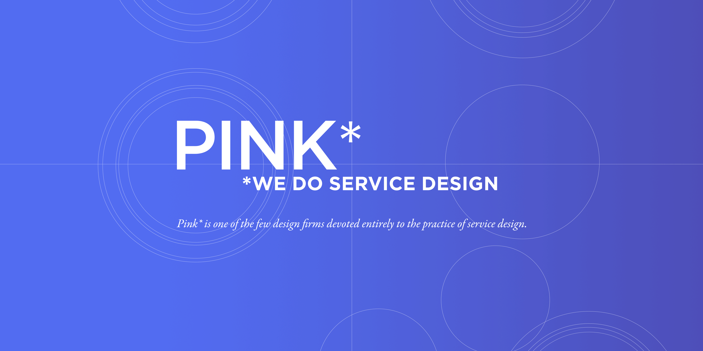

Designing a Design Firm
As graduate students, this team and I underwent the process of designing a design organization, specifically to work in service design. In 2007, service design was an emerging area of practice that only five firms around the world were explicitly exploring. Our efforts involved competitive analysis and defining our value proposition, all guided by Shelley Evenson, a founding leader in the field of service design. Pink* subsequently worked with two clients: GlaxoSmithKline and Africa Aid.
Roles: Founding partner, strategist, service designer. Collaborators: Alex Cheek, Renna Alyassini, Steve Selzer, Gabe Clapper 
Current State
We believe the current state is one of acceptance. People are given choices in their lives, and those choices are provided by entities outside of themselves. A person perceives the set of options as a confined set, with the only decision to be made to select one of these many options. Within this view of the current state, the individual is at the end of a string of causal events. We see this acceptance and complacency creating a separation between the individual and the experience.
At our best, people actively engage through making mistakes, manipulation of their environment, and creation. However, being placed in an environment of multiple choice does not facilitate any of these means of engagement. Because of this environment and the response to it, individuals are caught in natural evolution – a state by which they grow and change in response to their environment and not in a directed way. People do not effect change in their lives, but rather the ever changing situation that they are in is what prompts change in their lives.
Ideal State
We see an alternative to the current model of consumption.
The alternative starts with introspection and interaction. Instead of accepting choices in life as the act of picking from static lists, we hope a deeper level of interaction with situations will lead to active engagement in those choices. We further hope that the deeper level of engagement will lead to questioning, which will lead to the inevitable alternative to all choices presented — creation.
If an individual is in a situation where the choice is between a fixed number of options, that individual will realize that he or she does not need to accept this. We believe that in any situation, there are infinite choices if the individual develops those choices independently. Our intention is to design so that a person sees each new situation as a place of creation, as opposed to a place of decision, then the power moves from the external entities offering choices to the individual accepting or rejecting, consuming or creating. We believe that this will be a move from natural evolution to directed evolution, where the individual “forms and develops himself by working on and transforming the world outside him in cooperation with his fellow man” (Marx).
Our Approach
Our values have driven us all to service design because it most directly addresses the human experience. Service design allows for us to design for and address the environment, information, and interactions. By controlling several aspects of experience, we hope to create a future where the end user feels a sense of power – facilitating a shift from feeling that their choice is one of consumption to one of creation. Instead of offering choices to each user, we hope that the future state, the experience of the user, will be a joint effort where the final outcome will evolve out of collaboration between the designed space and the individual. Instead of designing for choices that are chosen or settled upon, we will design for possibilities that will be discovered and created.
We hope that humans will no longer be the final destination of products and services. We hope that the conversation between designer, client and consumer will shift the roles of each, turning the designer into someone who feeds off of the ideas of the consumer, the consumer into someone who not only extracts meaning from objects but creates experiences from meaning, and the client into someone who facilitates a development of endless possibilities of the future instead of confining the future to choices of form and manner.
Competitive Analysis
Process